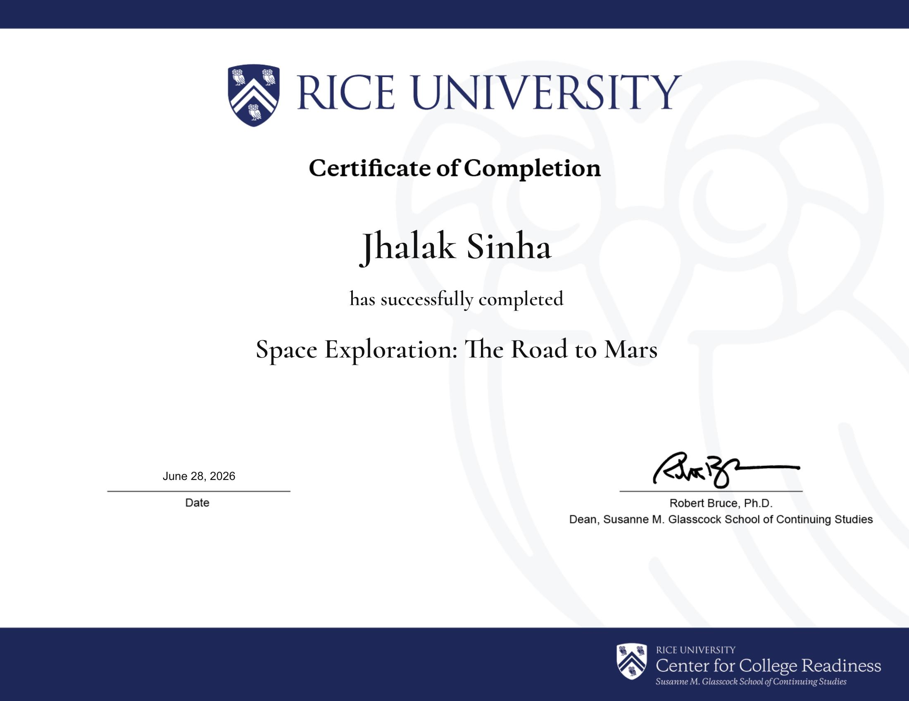

June 2026 · Aerospace Research
Space Exploration: The Road to Mars
This summer, I completed Space Exploration: The Road to Mars, a pre-college program through Rice University's Center for College Readiness. Over the course of the program, a small team of us took on a single question: if we were advising a real mission architect, how would we build the case for sending humans to Mars — and how would we design the mission to actually get them there?

Research & Interviews
Instead of working from textbooks alone, we went straight to the people building this future. We interviewed professors, researchers, and professionals at organizations including NASA and Axiom Space, asking them directly about mission feasibility, life support constraints, propulsion limitations, and what they saw as the biggest open problems standing between where we are now and a crewed Mars landing. We paired those conversations with intensive independent research to ground everything we proposed in real, current engineering constraints — not just what sounded exciting.
Building the Proposal
From there, we developed a full mission proposal covering:
- The case for the mission — why a Mars mission matters now, and what scientific, technological, and economic benefits it could realistically deliver
- A technology readiness assessment — an honest look at how capable current propulsion, life support, and landing systems actually are, and where the gaps still are
- Short-stay vs. long-stay mission architectures — weighing the trade-offs between a fast, high-risk opposition-class trajectory and a longer conjunction-class mission that waits for a more efficient planetary alignment
What I Took From It
What stuck with me most wasn't any single fact about propulsion or orbital mechanics — it was watching how professionals actually think through a problem this size: skeptically, rigorously, and without romanticizing the hard parts. It sharpened how I approach my own engineering projects, and it's a big part of what's pulling me toward aerospace as a field I want to keep building in.